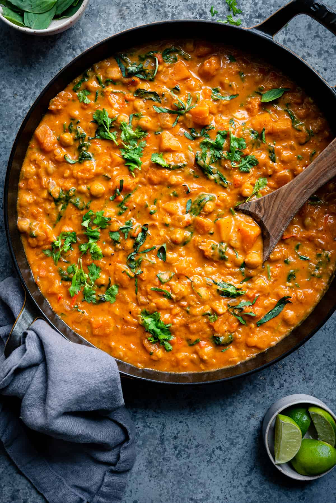

Thai Butternut Squash Chickpea Curry

Description
This Butternut Squash Curry with Chickpeas is one of the most flavorful Thai-inspired curries you’ll ever eat. It’s brimming with authentic Thai flavors but with a few fun spins, and uses butternut squash as a natural thickener. It’s incredibly creamy and comforting and perfect for cold weather.
It requires just one pot, can be completed in about 45 minutes, and is both meal prep- and freezer-friendly meal. At the same time, it delivers outstanding gourmet flavors and is special enough to serve to guests.
Ingredients
- 1 1/2 tbsp unrefined cocnut oil
- 1 large onion, diced
- 2 medium carrots, diced
- Kosher salt to taste
- 4 cloves garlic, minced
- 2” piece ginger, grated or finely minced
- 1-3 bird's eye chili peppers, thinly sliced
- 2 stalks fresh lemongrass, minced or grated
- 5 tbsp red curry paste
- 1 (13.5 oz) (400 ml) can full-fat coconut milk
- 1 cup (240 ml) low-sodium vegetable broth
- 5 cups (700-730 g) peeled and cubed butternut squash
- 2 1/2 tbsp reduced-sodium soy sauce
- 1 1/2 tbsp coconut sugar
- 2 15-oz (425 g) cans of chickpeas, drained and rinsed
- 4 cups (60 g) baby spinach or baby kale
- 1 tbsp lime juice or rice vinegar
- 1 large handful fresh cilantro, roughly chopped
- 1 handful thai basil leaves
- White or brown rice (for serving)
Instructions
- Heat a Dutch oven or a large saucepan over medium-high heat. Add the coconut oil, and once shimmering, add the onions and carrots along with a pinch of kosher salt. Cook the vegetables for 7-8 minutes, or until they are tender and lightly browned.
- Add the garlic, ginger, chili peppers (if using), lemongrass (if using), and red curry paste, and cook for 2 minutes, stirring frequently to coat the vegetables & prevent burning. If not using a nonstick pan, you'll likely need to add a tablespoon or two of water to prevent the mixture from drying out, sticking, and burning.
- Pour in a couple spoons of the coconut milk and allow it to bubble for a minute, stirring well. Add the vegetable broth, stirring with a spatula to scrape up any browned bits stuck to the bottom of the pot. Pour in the remaining coconut milk, cubed squash, soy sauce, and coconut sugar, stirring to combine.
-
Bring the mixture to a boil, then reduce the heat to low or medium-low to maintain a rapid simmer for 20 minutes, or until the squash is tender and cooked through.
Turn off the heat and use an immersion blender to blend roughly half of the curry. Make sure to leave some chunks of squash intact.
Alternatively, transfer half of the curry to a stand blender. Blend until the mixture is puréed and mostly smooth, then return it to the pan and stir to combine.
- Stir in the chickpeas and bring the curry to a gentle simmer. Once simmering, stir in the baby spinach or kale, stirring until the greens have wilted.
- Turn off the heat, and stir in the lime juice or rice vinegar. Taste for seasonings, adding salt as needed. Tear the Thai basil leaves to release their oils; add them to the curry, along with the chopped cilantro.
- Serve the curry over rice. Garnish with additional cilantro or Thai basil as desired.